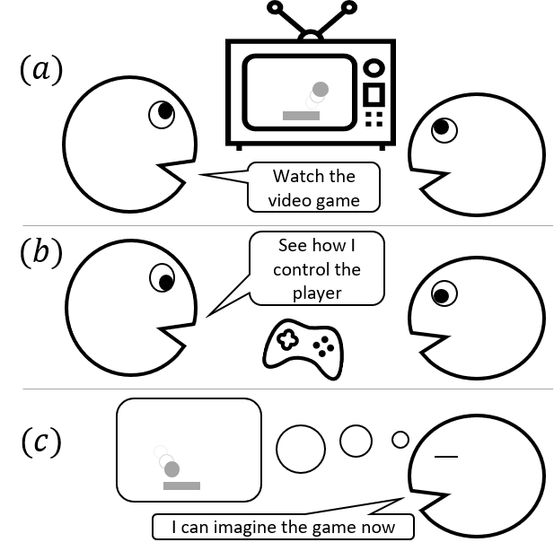
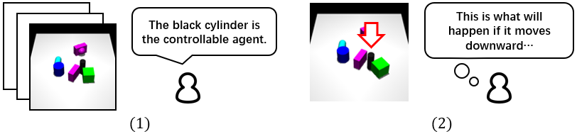

Learning an accurate model of the environment is essential for model-based control tasks. Existing methods in robotic visuomotor control usually learn from data with heavily labelled actions, object entities or locations, which can be demanding in many cases. To cope with this limitation, we propose a method, dubbed DMotion, that trains a forward model from video data only, via disentangling the motion of controllable agent to model the transition dynamics. An object extractor and an interaction learner are trained in an end-to-end manner without supervision. The agent's motions are explicitly represented using spatial transformation matrices containing physical meanings. In the experiments, DMotion achieves superior performance on learning an accurate forward model in a Grid World environment, as well as a more realistic robot control environment in simulation. With the accurate learned forward models, we further demonstrate their usage in model predictive control as an effective approach for robotic manipulations.
Existing research in cognitive science demonstrates the capabilities of infants for understanding the physical world and making predictions via unsupervised visual observation. By observing moving objects in the world, infants can acquire self-awareness and build internal physics models of the world. Such physical models help humans to acquire the ability to predict the outcome of physical events and control tools to interact with the environment.
See the example figure above: A player is showing the man how to play a video game. To learn the game, human should build an internal predictive model of the game, to know how to control the agent and how the actions taken affect the game state. However, human do not need to focus on the player’s actions on the keyboard all the time. Most of the time, human just watches the video in the screen, observes the interactions in the game. The model of the game is built mostly upon the visual observations. To know how to control the agent, a few additional observations on the keyboard are enough.
This example inspires us to learn unsupervised world models from videos. Note that, common approaches learning world models usually need a large amount of labelled videos in the environment, for supervised training. We propose DMotion, an unsupervised learning method, which is less data demanding, more intuitive and human-like. As shown in the figure below, in a world with several rigid bodies, DMotion first disentangles the agent object and learns objects’ interactions from unlabeled videos. Then, using a few samples labelled with agent’s actions, DMotion understands how each action affects the agent’s motion.
The environment for robotic/object manipulation can usually be considered as a Markov decision process, with a deterministic transition function (Newton's law). The observations are RGB images. We aim to build a forward model, that predicts the next observation given the observation history and the current action. The learned forward model is then used for model-predictive control, which selects actions to reach some goal in the environment.
The training dataset contains videos only, no additional annotations are provided. In this paper, an unsupervised learning method is proposed with spatial transformers to disentangle the motion of the agent and model the interactions between the agent and other objects, and further applied in visuomotor robotic control tasks.
Refer to section III.A for more detailed mathematical definition.
Figure 1. A schematic overview of our framework. As indicated by the blue bold arrows in the left part, we first learn the forward model using a collected unlabelled video dataset and a few demonstrations labelled with actions. In the right part with black arrows, combined with a planning algorithm, we use the learned forward model for model predictive control (MPC). The planning algorithm generates action sequences, queries the forward model for imagined future observations, and selects the best action to reach the target in the environment. |
Figure 2. The training process of DMotion. The model has two modules: an object extractor and an interaction learner. The object extractor consists of a motion encoder, an image encoder and an image decoder. By modelling the motion of different feature maps, the object extractor disentangles different objects in images. The interaction learner, indicated by the grey background, predicts the future frame conditioned on the last two frames and a feature map m0t+1. By training two modules together, we force the feature map m0 and the transformation matrix phi0 to contain the spatial and motion information of the agent, respectively. |
Figure 3. Example results of visual forecasting conditioned on the agent's motion. First and second rows are the environments of Grid World and Robot Pushing, respectively. Each row is a sample trajectory generated by our model recursively, conditioned on the agent's motion. The rightmost image in each row shows the ground truth of the last frame produced by the environment. |
Figure 4. Given figures of initial states (the blue boxes) and goal states (the red boxes), we visualise the states achieved by DMotion at different steps. |
Figure 5. Results of visuomotor control for Robot Pushing object manipulation task. The horizontal axis is the time step. The vertical axis is the average normalised distance between current and desired object locations, with the shaded regions indicating the standard deviations. Dotted lines show results from baselines trained with 10\% of labelled data. |
Figure 6. Visualisation of long-term forecasting in the Robot Pushing environment. Action labels are provided at each time-step and we recursively generate the next time-step. Notice how the baselines fail to pinpoint and disentangle the exact location of the agent after a few time-steps. |

Figure 7. Visualisation of the environment and the corresponding feature map containing the agent in the image encoder. |
This project was supported by National Natural Science Foundation of China —Youth Science Fund (No.62006006): Learning Visual Prediction of Interactive Physical Scenes using Unlabelled Videos. We would also like to thanks the funding from Key-Area Research and Development Program of Guangdong Province (No.2019B121204008) and National Key R&D Program of China: New Generation Artificial Intelligence Open Source Community and Evaluation (No.2020AAA0103500), Topic: New Generation Artificial Intelligence Open Source Community Software and Hardware Infrastructure Support Platform (No.2020AAA0103501).